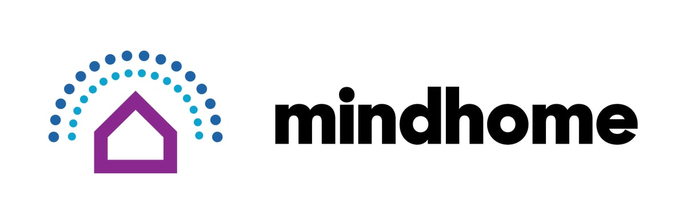

Aspiring Software Engineer and Cybersecurity Specialist
About Me
I’m Derric Varghese, a 3rd-year Computer Science and Cybersecurity student at the University of North Texas.
I have hands-on experience in full-stack development, C++ simulation projects, and machine-learning powered
applications. I enjoy building practical, user-focused solutions—whether it’s a city growth simulation,
an AI-powered chat app, or a 3D face detection interactive website.
Outside of coding, I explore new technologies, participate in hackathons, and constantly look for ways to
improve my skills. I’m driven by curiosity and a desire to build tools that make an impact.
Here is my Resume
Experience
Software Developer Intern
- Engineered control logic for Google’s Recirculation Wet Well system, improving water efficiency by 15%
- Analyzed system specifications and P&IDs to determine automation requirements
- Built I/O-driven algorithms for sensor/actuator reliability
- Developed VTScada operator interfaces for enhanced system visibility
- Conducted full-cycle testing and deployment
- Authored documentation and operator guides

Software Developer Intern (AI/Robotics)
- Implemented ROS2 for autonomous navigation and sensor integration
- Engineered robotic gestures for improved human-robot interaction
- Developed conversational NLP-based AI modules
- Contributed to VR teleoperation systems
- Enhanced object recognition for dynamic environments
Artificial Intelligence Research
- Integrated ethical principles into AI/ML models (fairness, transparency, accountability)
- Developed bias-mitigation strategies for responsible AI
- Collaborated with interdisciplinary teams to bridge theory with application
Notable Projects
T-Mobile Customer Happiness Index (HackUTD Solo Project)
- Built a real-time AI-powered sentiment dashboard using Google Gemini 2.0
- Implemented multi-face emotion tracking using TensorFlow.js BlazeFace
- Designed live dashboards with WebSockets
- Integrated browser speech API for voice-powered feedback
- Achieved 70–92% confidence emotion detection accuracy
- Technologies: React, TypeScript, Express.js, WebSockets, Gemini Vision API, TF.js, Tailwind CSS
- Built AI chat app that recommends scripture based on emotional theme analysis
- Used GPT-5 NLP to detect 14+ emotional states
- Added fallback keyword-response engine with 200+ templates
- Integrated multiple Bible APIs with intelligent failover
- Built theme-matching algorithm across 70+ curated verses
- Technologies: React, TypeScript, Express.js, TanStack Query, OpenAI API, Tailwind CSS